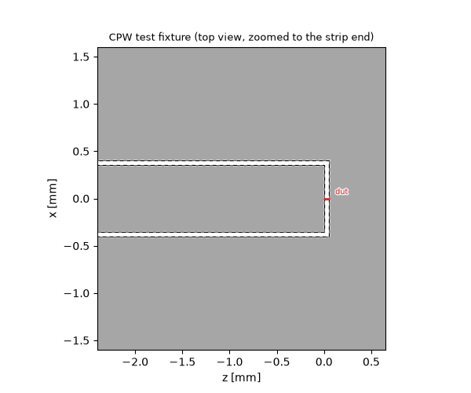
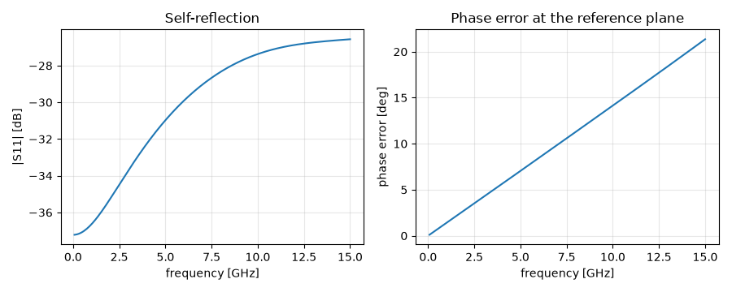
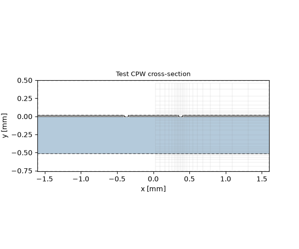

Note
Go to the end to download the full example code.
Lumped port tuning: coplanar waveguide#
A pre-flight check for a lumped port terminating a coplanar waveguide: fill in the given quantities of your target model, run, and the scoreboard tells you how good the termination is — worst reflection, usable band, phase error. Edit the knobs and re-run until the numbers meet your spec, then carry the settings over.
The termination mirrors how CPWs are excited with lumped ports in
practice, and it is the same picture as the coax: the centre strip
stops an end gap short of the ground metallisation behind it, and
the lumped port bridges that gap longitudinally, on the symmetry
plane of the pair. Declaring that plane as a magnetic symmetry wall
(xmin="SymmetryPMC") halves the model and keeps the port centred;
the ground plate beyond the gap ends the slots, so no extra loads and
no extra plate are needed. The structure is open above — a PMC lid,
not a metal cover. Knobs, exactly as for the coax: end-gap width,
end-gap position, port impedance.
The page Lumped ports: investigations explains the measurement and shows the sweeps; every number here is a property of your grid, so re-run whenever cross-section, resolution or band change.
import matplotlib.pyplot as plt
import numpy as np
import magnelio as mio
from magnelio import geo, plots, ports
Given quantities#
The cross-section of the target model plus band and resolution.
cell is the floor for the slot region — copy the resolution
your production mesh will actually have there.
w = 0.7e-3 # centre strip width [m]
s = 0.05e-3 # slot width [m]
h = 0.508e-3 # substrate height [m]
t = 17e-6 # metallisation thickness [m]
eps_r = 3.38 # substrate permittivity (Rogers 4003)
a = 10 * s # air above the metallisation [m]
b = 5 * s # air below the substrate [m] (grounded CPW: b = 0)
f_max = 15e9 # upper band edge [Hz]
cell = s / 4 # cell-size floor at the slots [m]
The knobs#
gap— end-gap width between strip end and the ground metallisation behind it; sets the broadband reflection level.gap_position— where the gap starts relative to the reference plane (positive = beyond it); sets the phase error.z0_port—Noneuses the line impedance of the grid from the waveguide-port solver; a number uses that instead.
gap = s
gap_position = 0.0
z0_port = None
Derived quantities#
L = 5.0 * w # waveguide port to reference plane [m]
p = 3.0 * (w / 2 + s) # ground padding beyond the slots [m]
Measurement machinery. One builder serves both runs: without a strip end it is the plain through line (the phase reference, with waveguide ports at both ends); with one, the strip stops at the gap start and one boolean cut shapes strip, slots, end gap and the closing ground plate in a single stroke. After declaring the lumped port the mesh is rebuilt, so the grid anchors lines at the fine gap and the port travels on the mesh.
X = w / 2 + s + p # half-width of the model
def build(strip_end=None, gap=None):
z_lo = -L
z_hi = (0.0 if strip_end is None else strip_end + gap) + p
diel = mio.Material.from_isotropic(epsilon=eps_r, name="rogers4003")
lift = geo.Brick.from_ranges(x1=-X, x2=X, y1=-h - b, y2=-h, z1=z_lo, z2=z_hi, material="air")
subst = geo.Brick.from_ranges(x1=-X, x2=X, y1=-h, y2=0, z1=z_lo, z2=z_hi, material=diel)
air = geo.Brick.from_ranges(x1=-X, x2=X, y1=0, y2=a, z1=z_lo, z2=z_hi, material="air")
metal = geo.Brick.from_ranges(x1=-X, x2=X, y1=0, y2=t, z1=z_lo, z2=z_hi, material="pec")
cut_z2 = z_hi + 1.0 if strip_end is None else strip_end + gap
metal -= geo.Brick.from_ranges(x1=-w / 2 - s, x2=w / 2 + s, y1=-1, y2=1, z1=-1, z2=cut_z2)
strip_z2 = z_hi if strip_end is None else strip_end
metal += geo.Brick.from_ranges(
x1=-w / 2, x2=w / 2, y1=0, y2=t, z1=z_lo, z2=strip_z2, material="pec"
)
model = mio.GeometryModel(
background="air",
boundary_conditions={"xmin": "SymmetryPMC", "ymax": "PMC"},
)
model.add([lift, subst, metal, air - metal])
model.add_port(
ports.PortWaveguide(
name="wg", plane="zmin", corners=((-1, -1, None), (1, 1, None)), n_modes=1
)
)
return model
def _mesh(model):
return mio.Mesh.from_geometry(model, mio.MeshControl(min_cell_size=cell), f_max=f_max)
ref_model = build()
ref_model.add_port(
ports.PortWaveguide(name="far", plane="zmax", corners=((-1, -1, None), (1, 1, None)), n_modes=1)
)
ref = mio.AnalysisScatteringTD(mesh=_mesh(ref_model), verbose=False).run(excited=[("wg", 0)])
model = build(strip_end=gap_position, gap=gap)
mesh = _mesh(model)
z_line = mio.AnalysisScatteringTD(mesh=mesh, verbose=False).solve_ports()["wg"].z_line_num
print(f"line impedance on this grid: {z_line:.2f} Ohm")
model.add_port(
ports.PortLumped(
name="dut",
start=(0.0, 0.0, gap_position),
end=(0.0, 0.0, gap_position + gap),
Z0=float(z0_port if z0_port is not None else z_line),
)
)
mesh = _mesh(model) # rebuild: the mesh carries the port
result = mio.AnalysisScatteringTD(mesh=mesh, verbose=False).run(excited=[("wg", 0)])
mesh | feature planes
mesh | grid lines
mesh | materials
mesh | conformal cells
mesh | PEC masks
mesh | 23 x 31 x 9 cells
mesh | feature planes
mesh | grid lines
mesh | materials
mesh | conformal cells
mesh | PEC masks
mesh | 23 x 31 x 33 cells
line impedance on this grid: 42.22 Ohm
mesh | feature planes
mesh | grid lines
mesh | materials
mesh | conformal cells
mesh | PEC masks
mesh | 23 x 31 x 33 cells
The test fixture#
A top view of the metallisation plane (the half-model above the symmetry plane): centre strip up to the gap start, slot and ground, the end gap, and the lumped port bridging it longitudinally on the symmetry plane at the lower edge.
fig, ax = plots.plot_cross_section(
model,
"y",
t / 2,
flip=True,
slab=t,
title="CPW test fixture (top view, zoomed to the strip end)",
)
ax.set_xlim(-6.0 * (w / 2 + s) * 1e3, (gap_position + gap + p / 2) * 1e3)

(-2.4000000000000004, 0.6500000000000001)
The scoreboard#
The phase error is read against the reference run and polarity-normalised: the sign of a mode profile is a convention, so the error is referenced to the nearest multiple of 180° at the low end of the band.
f = np.asarray(result.f_axis)
band = f <= f_max
s11_db = result.db("wg", "wg")
err = result.phase("dut", "wg") - ref.phase("far", "wg")
err -= 180.0 * np.round(err[int(np.argmax(f >= f_max / 15.0))] / 180.0)
good = s11_db[band] < -20.0
f_edge = f[band][np.argmin(good)] if not good.all() else f[band][-1]
print("--- current settings — tune until this meets your spec ---")
print(f"worst |S11| in band : {s11_db[band].max():6.1f} dB")
print(f"|S11| < -20 dB up to: {f_edge / 1e9:6.2f} GHz")
print(f"max |phase error| : {np.abs(err[band]).max():6.2f} deg")
fig, (ax1, ax2) = plt.subplots(1, 2, figsize=(9.0, 3.6))
ax1.plot(f[band] / 1e9, s11_db[band])
ax1.set_xlabel("frequency [GHz]")
ax1.set_ylabel("|S11| [dB]")
ax1.set_title("Self-reflection")
ax1.grid(True, alpha=0.3)
ax2.plot(f[band] / 1e9, err[band])
ax2.set_xlabel("frequency [GHz]")
ax2.set_ylabel("phase error [deg]")
ax2.set_title("Phase error at the reference plane")
ax2.grid(True, alpha=0.3)
fig.tight_layout()

--- current settings — tune until this meets your spec ---
worst |S11| in band : -26.6 dB
|S11| < -20 dB up to: 15.00 GHz
max |phase error| : 21.35 deg
The cross-section with the mesh it is actually solved on — check that slots and substrate resolve the way your production model does.

Carry it over#
Transfer gap, gap_position (relative to where your
reference plane is) and the port impedance into the target model
once the numbers meet your spec — the target excites through the
very same end-gap port. Background and sweeps:
Lumped ports: investigations. When the cross-section,
resolution or band changes, run this page again.
Total running time of the script: (0 minutes 7.719 seconds)